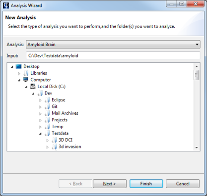
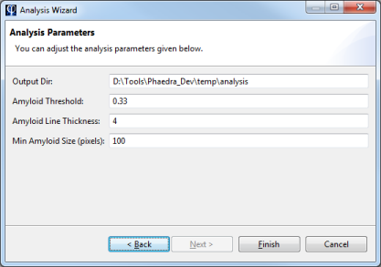

Phaedra includes a component for executing image analysis routines. The list of available routines depends on your installation and environment; contact your Phaedra administrator to learn more about this.
In the data processing flow of Phaedra, image analysis happens before data import. After the analysis has completed, an Import Wizard will start automatically to import the analysis results into Phaedra.
To run an image analysis routine, select Tools > Analysis Wizard in the main menu.

The Analysis Wizard will open, asking you to select one of the available analysis routines, and a folder containing the data to analyze.

Click Next to proceed. In the following screen, you can adjust the analysis parameters. The list of parameters that is shown, depends on the analysis routine you selected in the previous screen.
Under normal circumstances, the values that are presented are reasonable defaults and should not be altered.

Click Finish to start the analysis.
When the analysis is finished, an Import Wizard will open automatically. See Importing Plates for more information about the Import Wizard.